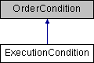

This class represents a condition requiring a specific execution event to be fulfilled. Orders can be activated or canceled if a set of given conditions is met. An ExecutionCondition is met whenever a trade occurs on a certain product at the given exchange.
| Name | Type | Description |
|---|---|---|
| Exchange | string | Exchange where the symbol is being monitored. |
| SecType | string | Asset type being monitored. |
| Symbol | string | Instrument’s symbol. |
Inheritance diagram for ExecutionCondition:
